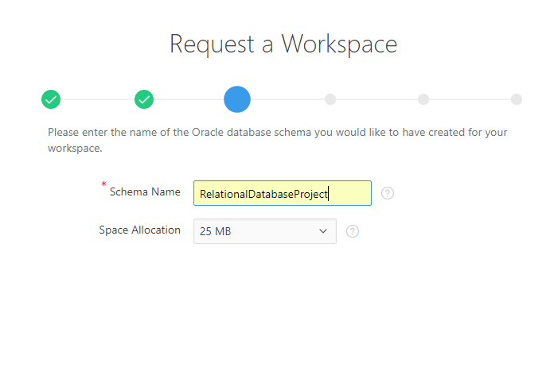
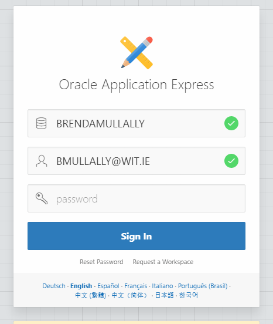
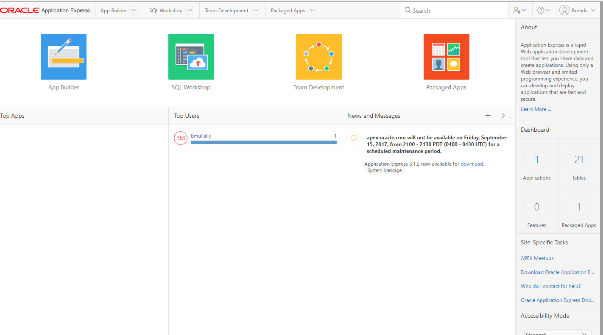

Objectives
This lab will firstly introduce you to the learning environment provided by Oracle Academy. It will show you how to setup an Oracle Academy account and login to ilearning to access the module materials.
Setup
Instructions for setting up an Oracle Academy membership
First you must have an oracle account. Go to - http://Oracle.com/ and sign up for an oracle account. Next go to - http://academy.oracle.com/ click on Sign In/Register for Account. Scroll down the page and click on the image shown below:

Next scroll down and read the 7 steps on joining Oracle Academy.

Choose the button to join as an individual.

While joining as an idividual you will need to choose Waterford Institute of Technology from the list of institutions so you are associated to W.I.T

Once you complete the registration process you should be able to login to the Oracle iLearning website.
Instructions for accessing Oracle Academy ilearning site
To login use the username and password given to you (replace snn with s and the two digit number assigned to you in class)
username: ie_wit_db_snn password: databases2017
Once logged in you will be asked to update your password to at least 8 characters.
Then you should see the following:

This page gives you access to some of the the curriculum used in this module.
Open a new page and go to - https://apex.oracle.com/en/

Click Get Started and choose Free Workspace

Choose an application development workspace then fill in the form. Name you workspace using your full name.

Name the schema relationaldatabasesproject

Answer the questions and agree to the terms and conditions. Submit the request and you should receive an email that the workspace has been created for you.

Go to the login screen and enter your details, once you are logged in you should see the following:

These two sites are what you will be using for at least the first 6-8 weeks of this module. Save your usernames and passwords for these sites.
Accessing curriculum
ilearning
To access the curriculum shown in lectures login to ilearning. Click the play button beside Database Design - Student - English
In the left hand pane click on Section 2: Entities and Attributes
You will see a page similar to this:

Click on either the number 1, or on the Next Lesson button.
The following icons are shown:

The book link will open a new tab and display the html page containing the curriculum material. The graduation cap will open a new tab and display a pdf version of the curriculum material. The writing hand will open a pdf that contains practice activities for the section.
These icons show for each subsection within Entities and Attributes.
You should now complete the activities for subsection 2-2 Entities, Instances, Attributes and Identifiers.
Installing MySQL
It is also a good idea to try downloading and installing a database for your own loptop.
You will need to use your Oracle signin to access the download.
Download the the MySQL installer and follow the steps to install MySQL Server, workbench, sample databases and connectors.
=======Download and install MySQL sample database
Download the following file:
Extract the files onto your file system.
In workbench choose File-> Open SQL Script , choose the file that you have just extracted from the zip, it is named mysqlsampledatabase.sql
It is now viewable in the workbench environment.
To execute the SQL script you click Execute button shown by the lightening icon
Right click inside the Schema panel and click Refresh All button to update the panel.
You should now see the classic model database is loaded successfully into MySQL database server.